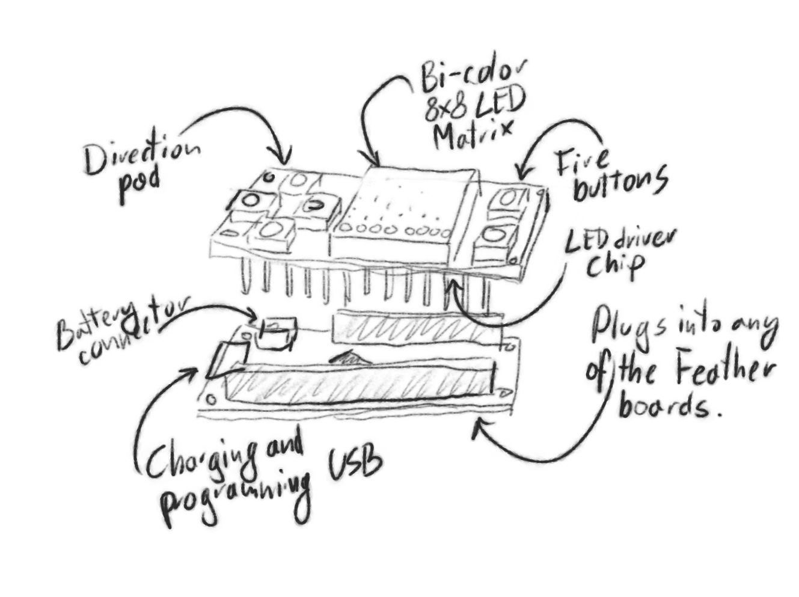

The Concept¶
Published on 2017-05-01 in PewPew FeatherWing.
Here are some more details about the whole concept of this board.
The board will be the size of a standard FeatherWing shield – same as the Adafruit Feather boards, and of course it will plug into those boards. It should work with any of the Feather boards, but I only plan to make the drivers and library available in CircuitPython – so if you want to use it with any of the boards that don’t run CircuitPython, you will need to write the software yourself – but then again, you are then probably pretty experienced anyways.
The board will have a bi-color 8x8 LED matrix for display, and 6 buttons for input. It will also contain the electronics for handling the display and buttons. I might add some way of making sounds, but that’s not decided yet.
The FeatherWing will communicate with the Feather using I²C protocol and the two standard pins traditionally used for that on the Feather boards, using a few fixed addresses. All the other pins will be free to be used with other add-ons. The prototypes may be using additional pins for experimenting, but ultimately I want them to be free.
The power is drawn from the Feather board, which in turn can be powered either through USB, or with a LiPo battery connected to the battery connector. A Battery FeatherWing can also be used.
Since the top side of the board is pretty much all taken by the display and buttons, the components have to be placed on the bottom side of the board. They should however be as flat as possible, as to not collide with the components on the top side of the board below.
There will be a number of CircuitPython libraries for the low-level components of the board, as well as a high-level library dedicated to this particular board and to making games with it. That high-level library might use some simplifications and may add limitations to what can be done, for the sake of making things simpler. Experienced users can bypass that limitation by calling the low-level libraries instead.
There will be a number of example games implemented for this board, as well as at least one tutorial describing in detail the steps required to write such a game. All those games will be written in CircuitPython. Some of the larger games might not work on all the Feather boards, due to memory limitations.
Apart from playing games, the board can also be used for controlling other devices – if a Feather board that has WiFi, Bluetooth or packet radio capabilities is used, or if an add-on giving such capabilities is connected. This will not be covered in the main library, though. (Also, multiplayer games could be possible, but that is also outside the scope for now.)